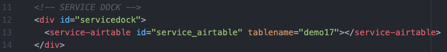
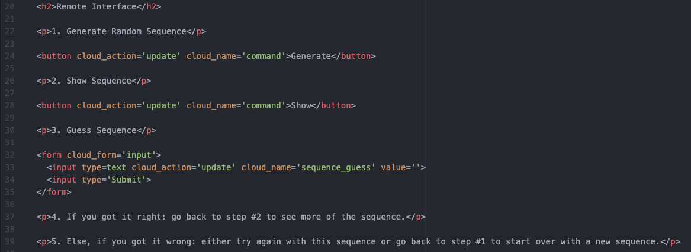
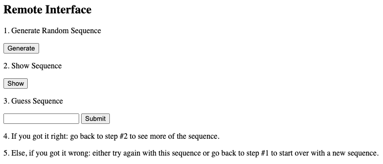
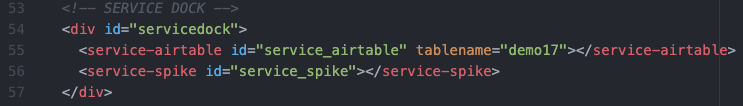
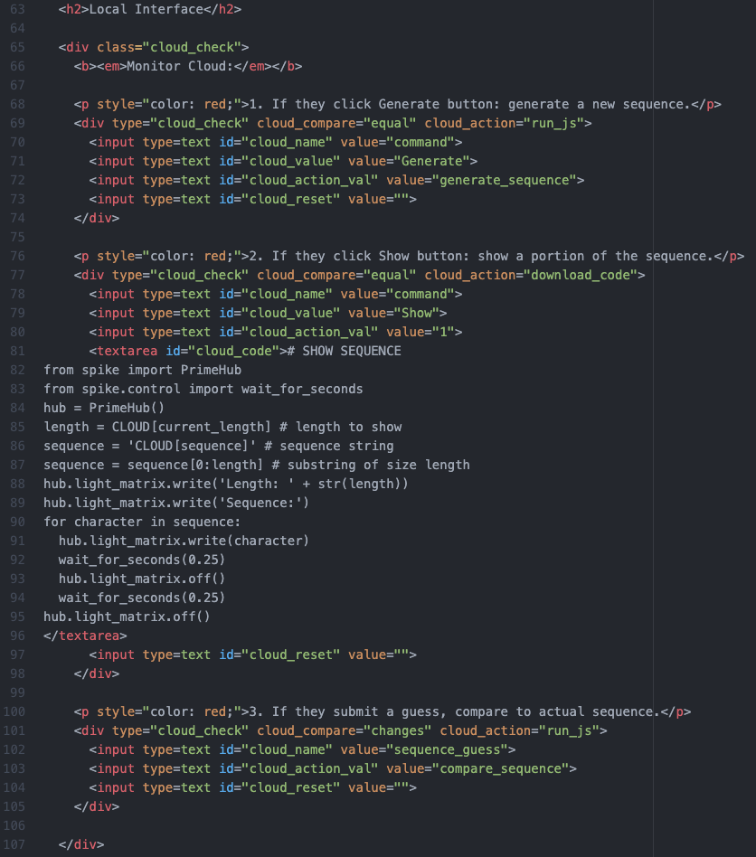
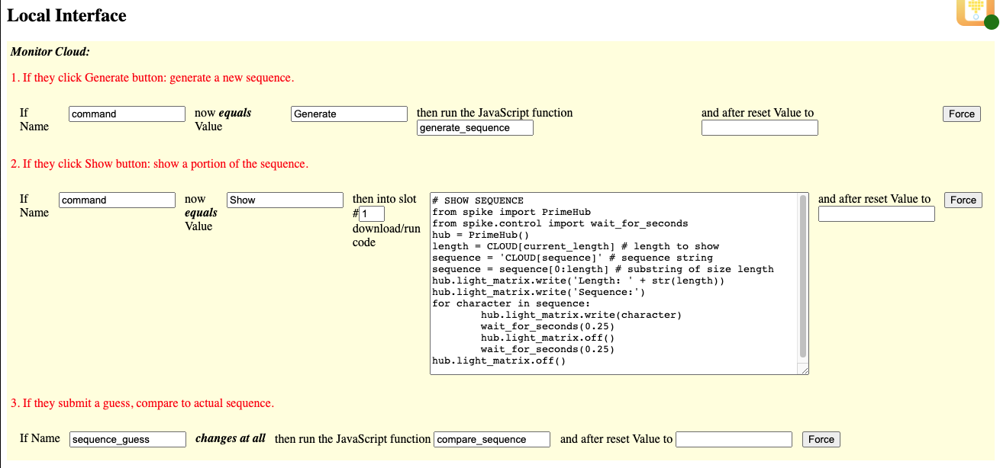
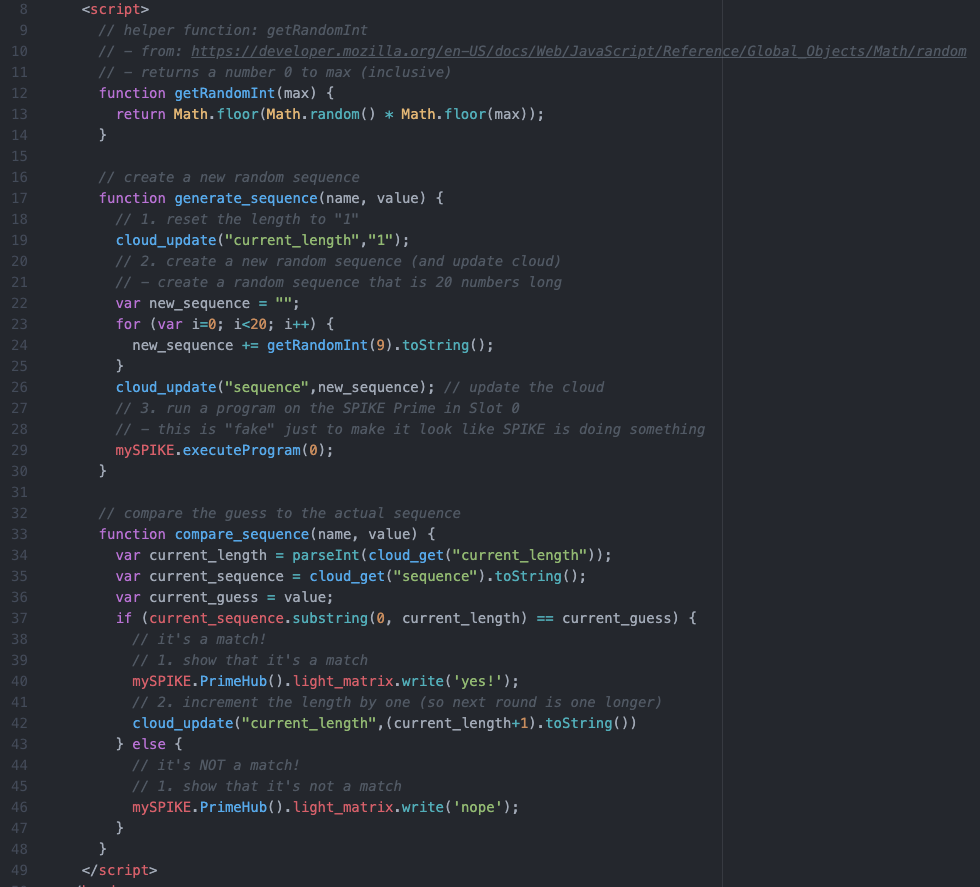
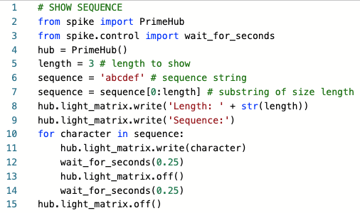

Demo 17: Random Number Match Project
This project-demo challenges the user to match a random number.
Documentation
Be sure to view the overall Documentation for configuring
the cloud storage (API key, Base ID, etc) and for more information on how the entire system works.
Airtable Setup
The Airtable is set up as follows:
- command: used to trigger the different steps of the project (Generate, Show) associated with buttons
- current_length: how much of the sequence to show (starts at 1, grows when they get it right)
- sequence: this will hold the randomly generated sequence (aka. ground truth)
- sequence_guess: the user's guess will be entered here when they make a guess

Remote Page Setup
Service Dock
The remote page has the Airtable Service Dock element. Make sure to
update the tablename attribute to match your table name.

Remote Interface
The interface walks the user through the game:
- Generating a new random sequence of numbers
- Showing the current sequence (sub-sequence of increasing length)
- Allowing user to guess the sequence
- and 5. Providing instructions if they get it right/wrong

This is what the interface will look like on the Remote Page:

Local Page Setup
Service Dock
The local page has both the Airtable Service Dock element (make sure
to update the tablename attribute to match your table name).
There is also a single SPIKE Prime Service Dock element.

Local Interface
The local page is monitoring "command" and "sequence_guess" Airtable values:
- if "command" equals "Generate" then a new sequence is generated (via the JavaScript function
generate_sequence)
- if "command" equals "Show" then the sequence is shown (via the MicroPython code downloaded into Slot #1)
- if "sequence_guess" changes, then the user submitted a new guess and it should be evalauted (via the JavaScript function
compare_sequence)
Each of these resets the field back to blank, so it will re-run if the user activates/changes it again.

This is how the interface will look on the Local Page:

Notes:
The JavaScript functions are as follows:
- generate_sequence:
- since starting over, resets the stored length to "1" (and updates Airtable)
- generates a new random sequence of characters (digits "0" to "9") that is 20-characters in length (and updates Airtable)
- runs the program sitting in Slot #0 (this is a "dummy" program that makes it look like it's doing work; see MicroPython below)
- compare_sequence:
- looks up the "current sequence" and "current guess" from the database
- does a "substring" on current sequence to make sure the right length
- compares the two to see if equal
- IF EQUAL: displays "yes" and increments length (so sequence gets longer/harder for next round)
- IF NOT EQUAL: then displays "no" and doesn't change anything (in case user wants to guess again)

Note: to develop the code for displaying the sequence I used CodingRooms
to write the prototype code, using
test values for the length (see line 5: length = 3) and the sequence
of random values (see line 6: sequence = 'abcdef'; note I used
letters instead of numbers, but it doesn't really matter what it was).
Then when I moved the code from
CodingRooms over to my webpage, I then replaced the length value (3) with
"CLOUD[current_length]" and the sequence with "CLOUD[sequence]" in order
for them to be replaced with the current values stored in the cloud.

SPIKE Prime MicroPython Code
"Slot #0" holds a program that makes it look like it's doing work, but
really just displaying a sequence of images.
Example Code for SPIKE Prime Hub Slot #0
# MicroPython for LEGO Hardware (LEGO Education's SPIKE Prime)
from spike import PrimeHub, LightMatrix
from spike.control import wait_for_seconds
hub = PrimeHub()
for num_times in range(3):
for i in range(1,12): # numbers 1 to 12
hub.light_matrix.show_image('CLOCK' + str(i))
wait_for_seconds(0.1)
hub.light_matrix.show_image('YES')
wait_for_seconds(1)
hub.light_matrix.off()
Demo 17 Quick Links:
Return back to the main homepage.